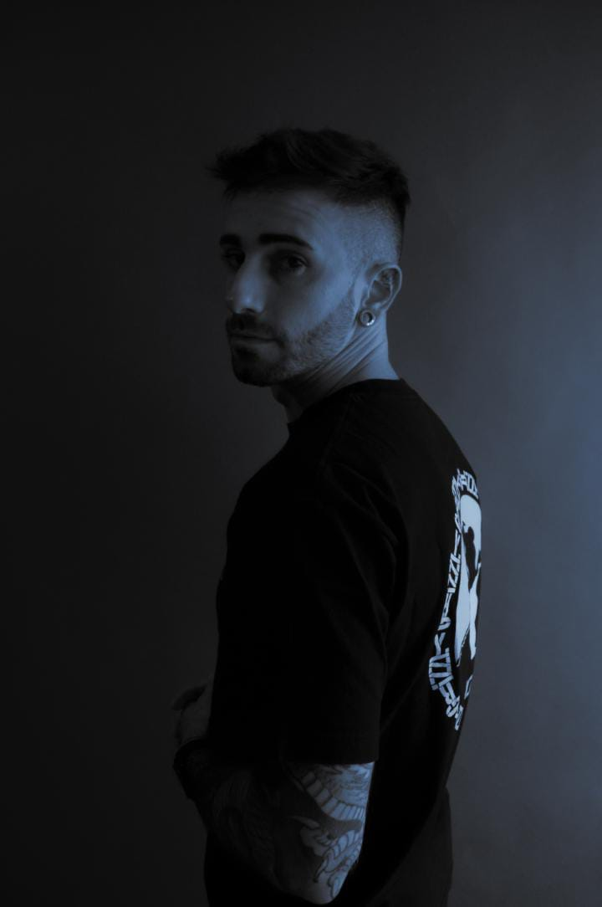

RISAU es un DJ argentino cuya propuesta sonora viaja entre el Techno, House y Deep House. Su música combina una energía festiva y elegante con grooves profundos, matices futuristas, percusiones africanas y un toque minimalista. Con una narrativa progresiva y envolvente en la cabina, sus sets están diseñados para conectar con la pista y transformar cada presentación en un auténtico viaje musical.
La historia de RISAU con la música electrónica comenzó mucho antes de pararse frente a las bandejas. Su pasión nació a los 11 años cuando un CD de D-Mode llegó a sus manos, y a los 14 ya vibraba en las pistas al ritmo de referentes locales como JP Montesino y JP Sgalia. Desde las matinés icónicas de la zona oeste hasta las ediciones masivas de Creamfields, la escena electrónica siempre fue su lugar en el mundo.
Durante años formó parte de la noche y de la cultura clubber desde adentro: trabajando como barman y en las puertas de espacios clave como Under Club, Golf Club Palermo, Kaix y productoras independientes. Esa cercanía con la noche le permitió absorber la dinámica de la pista, entender el timing del público y desarrollar un oído crítico para la selección musical.
Tras un viaje de mochilero que marcó un punto de inflexión en su vida y luego de cuatro años dedicados a la fotografía, RISAU decidió canalizar su necesidad de expresión a través del DJing. Su propuesta fusiona sonoridades orgánicas —con fuerte presencia de tambores y ritmos africanos— con elementos futuristas, elegantes y minimalistas, manteniendo siempre el groove como hilo conductor.
Con una cuidada construcción musical en sus sesiones, hizo su debut a comienzos de 2026 en Waikiki (Ramos Mejía) y se consolidó con su presentación en Wax Club Cultural, lugar donde actualmente también trabaja y forma parte de la casa. RISAU representa el momento de expresarse, conectar con la pista y construir experiencias sonoras en conjunto con otros artistas.

Escuchá el set grabado en vivo en Wax Club Cultural. Un recorrido sonoro de ritmo constante, grooves elegantes y selección fina.
Para contrataciones y fechas disponibles, comunícate directamente vía WhatsApp o Instagram.